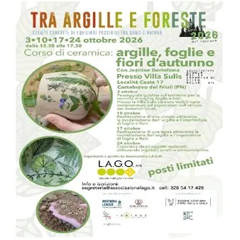

da sab 3 ott a sab 24 ott
Tra argille e foreste: corso di ceramica.
𝗖𝗢𝗥𝗦𝗢 𝗗𝗜 𝗖𝗘𝗥𝗔𝗠𝗜𝗖𝗔: 𝗔𝗥𝗚𝗜𝗟𝗟𝗘, 𝗙𝗢𝗚𝗟𝗜𝗘 𝗘 𝗙𝗜𝗢𝗥𝗜 𝗗’𝗔𝗨𝗧𝗨𝗡𝗡𝗢 Quattro pomeriggi dedicati alla creatività, per scoprire le argille del territorio e trasformarle in oggetti unici, modellati e decorati con le impronte di foglie e fiori. Con Jeanine Gerlofsma
 Indicazioni
Indicazioni
- Costi e prenotazioni
- Costo non indicato · Prenotazione non indicata
- Programma
- Programma da verificare. Apri la fonte ufficiale per orari e possibili aggiornamenti.
- In caso di maltempo
- Nessuna indicazione specifica pubblicata.
- Note
- Acquisito automaticamente dalla fonte.
L’EVENTO
Descrizione completa
𝗖𝗢𝗥𝗦𝗢 𝗗𝗜 𝗖𝗘𝗥𝗔𝗠𝗜𝗖𝗔: 𝗔𝗥𝗚𝗜𝗟𝗟𝗘, 𝗙𝗢𝗚𝗟𝗜𝗘 𝗘 𝗙𝗜𝗢𝗥𝗜 𝗗’𝗔𝗨𝗧𝗨𝗡𝗡𝗢
Quattro pomeriggi dedicati alla creatività, per scoprire le argille del territorio e trasformarle in oggetti unici, modellati e decorati con le impronte di foglie e fiori. Con Jeanine Gerlofsma
Dettagli:
Sabato 3 , 10 , 17 e 24 ottobre
Orario: dalle 15:30 alle 17:30
Dove: Villa Sulis - Località Costa 17 a Castelnovo del Friuli PN
𝟯 𝗼𝘁𝘁𝗼𝗯𝗿𝗲 – Una passeggiata alla scoperta dei materiali del territorio.
𝟭𝟬 𝗼𝘁𝘁𝗼𝗯𝗿𝗲 – Diamo forma a una ciotola con texture naturali
𝟭𝟳 𝗼𝘁𝘁𝗼𝗯𝗿𝗲 – Modelliamo una tazza con texture naturali
𝟮𝟰 𝗼𝘁𝘁𝗼𝗯𝗿𝗲 – Aggiungiamo colore alle nostre creazioni
Info e iscrizioni: segreteria@associazionelago. it tel. 𝟯𝟮𝟴 𝟱𝟰𝟭𝟳𝟰𝟮𝟴
L’evento fa parte del progetto 𝗧𝗿𝗮 𝗔𝗿𝗴𝗶𝗹𝗹𝗲 𝗲 𝗙𝗼𝗿𝗲𝘀𝘁𝗲, con il sostegno della 𝗥𝗲𝗴𝗶𝗼𝗻𝗲 𝗔𝘂𝘁𝗼𝗻𝗼𝗺𝗮 𝗙𝗿𝗶𝘂𝗹𝗶 𝗩𝗲𝗻𝗲𝘇𝗶𝗮 𝗚𝗶𝘂𝗹𝗶𝗮 e di @iosonofriuliveneziagiulia.
IL PROGRAMMA
Programma e orari
Appuntamenti raccolti dalle fonti elencate. Dove manca un orario, non è ancora disponibile in questa scheda.
Programma pubblicato
- Dal 2026-10-03 al 2026-10-24
INFORMAZIONI UTILI
Prima di partire
- Controllare la fonte prima di partire.
ORGANIZZAZIONE